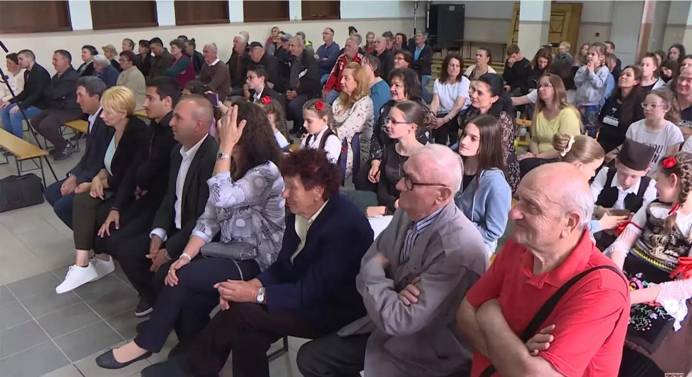
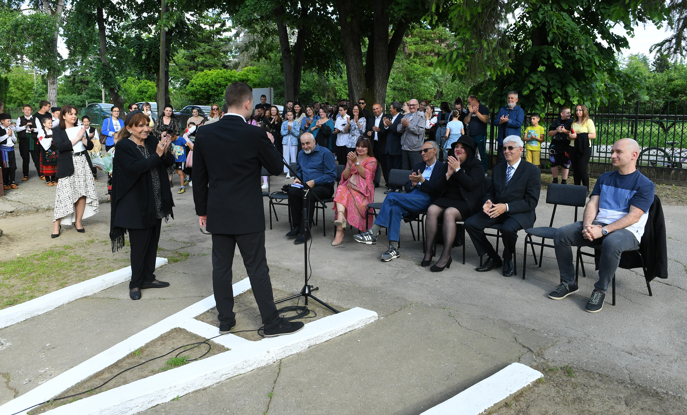
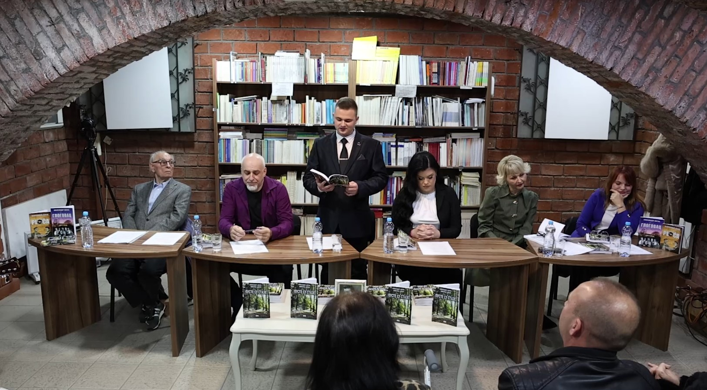
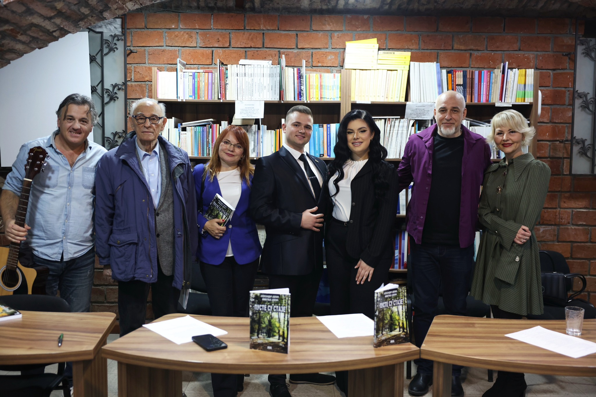

Године 2023. Александар Јевтић оснива пројекат „ПЛОЧА” и постаје директор тог пројекта, који ће изнедрити мноштво нових уметничких остварења. Када је пројекат основан, у екипи је било седам, а сада педесет шест особа. У екипи постоји управни, извршни и организациони одбор; председници тих одбора, потпредседници, чланови, заменица директора пројекта, маркетинг директор, заменик маркетинг директора, маркетинг сарадници...
2023 Играно-документарни филм и књига под називом „ПЛОЧА”
Са 19 година, Александар је започео писање књиге под називом „ПЛОЧА”. Упоредо, започео је и писање сценарија за истоимени документарно-играни филм. Филм и књигу посветио је свом прадеди, познатом певачу, текстописцу и композитору Животију Јевтићу, који је 1968. године снимио и издао грамофонску плочу под називом „Пусте су стазе” и отуда је и назив „ПЛОЧА”. У њима, поред информација о свом прадеди и његовом животу, Александар промовише праве, истинске породичне и традиционалне вредности и љубав према селу и коренима. Промоцију књиге и премијеру документарно-играног филма „ПЛОЧА” одржао је на дан када је било 30 година од смрти Животија Јевтића ‒ 11. 05. 2023. у Културном центру у Јагодини. Сала Културног центра била је скоро пуна, цела екипа пројекта је била одушевљена снажном емотивном реакцијом публике. Приказиван је у биоскопима широм Pепублике Србије и Северне Македоније, а и на телевизији Коперникус и Палма Плус.
Видео са овог дешавања можете погледати на следећем линку: Погледај догађај
Сала културног центра приликом пројекције филма плоча
Промоција књиге "Плоча"
Рецезенти књиге „ПЛОЧА” јесу драмска уметница Љиљана Стјепановић и јагодински професор Душан Илић. Следе њихове рецензије о књизи „ПЛОЧА”.
Ljiljana Stjepanović
Рецензија Љиљане Стјепановић:
‒ Ову књигу сам доживела врло емотивно, фасцинирана сам да постоје млади људи који су у двадесетим годинама живота, који у себи имају толико емоција, толико поштовања према својим прецима, према генима који се наслеђују. Била сам дирнута емотивно, чак сам и заплакала читајући, јер ми је невероватно да неко толико поштује оно што је било пре њега и оно што су многи почели да заборављају, нажалост. ...
Рецензија Љиљане Стјепановић:
‒ Ову књигу сам доживела врло емотивно, фасцинирана сам да постоје млади људи који су у двадесетим годинама живота, који у себи имају толико емоција, толико поштовања према својим прецима, према генима који се наслеђују. Била сам дирнута емотивно, чак сам и заплакала читајући, јер ми је невероватно да неко толико поштује оно што је било пре њега и оно што су многи почели да заборављају, нажалост. Ове вредности, које аутор истиче у овој књизи, јесу нешто што ја апсолутно подржавам, зато што је то моја филозофија живота, јер сам пре свега мајка и бака, па тек онда глумица. Сматрам да је породица смисао живота, а поред тога и љубав коју дајемо једни другима, то се кроз ову књигу заиста осећа. Александрова силна љубав према онима који су били пре њега и, даће Бог, да се овим поносе и његова деца када буду прочитала ово.
Кад сам прочитала књигу, рекла сам: „Благо мајци која је родила овакво дете.” За мене је откровење да један млад човек има толико квалитета у себи, толико доброте, лепоте и љубави према другима и да промовише породицу, а још увек није ожењен. То је дивно, јер значи да је растао у једној здравој породици и да је имао добро детињство, као што је и нагласио у књизи. Ја сам срећна што имам двоје деце, два сина која су израсла у добре људе и мислим да је то све захваљујући љубави и ономе што ми дајемо. Не можемо само да очекујемо да нам други дају љубав, треба да је пружамо другима.
Ова ауторова упорност да дође до плоче свог прадеде Животија је за мене фасцинантна. То је невероватно да један млад човек има толико стрпљења, снаге и упорности у себи, а оно што ме посебно дирнуло је овај знак на небу, ту сам заиста заплакала. Јер да се слово Ж прикаже на небу и да он то услика, то је знак лично њему, да га његов прадеда чува. То је за мене откровење и ту сам заиста заплакала.
Много ми се допадају и фотографије, које су употпуниле књигу. Када читам књигу и на крају гледам фотографије, имам утисак као да сам погледала и документарни филм. Прво читам, а онда видим људе о којима сам читала ‒ то је одлично осмишљено.
За ову нашу Србију има наде када имамо овакву младост, срце ми је огромно, поносна сам на Александра и имала сам велику срећу да га упознам и посетим дом његове породице. Његову породицу сматрам својом, а њега волим као рођеног унука. Моје мишљење је да би млади требало да се угледају на њега јер промовише породичне вредности. Ово је тек његов почетак, сигурна сам да њега чека јако успешна каријера, јер он свашта може да постигне и уради у животу.
Рецензија професора Душана Илића:
Prof. Dušan Ilić
‒ Најпре бих желео да кажем да сам веома почаствован учествовањем на промоцији филма и књиге младог и талентованог аутора Александра Јевтића. У овим, можемо слободно рећи, правим малим уметничким делима, он надахнуто и с пијететом говори о својој породици, својим прецима, члановима угледне породице Јевтић, која живи у селу Глоговцу већ неколико векова. ...
‒ Најпре бих желео да кажем да сам веома почаствован учествовањем на промоцији филма и књиге младог и талентованог аутора Александра Јевтића. У овим, можемо слободно рећи, правим малим уметничким делима, он надахнуто и с пијететом говори о својој породици, својим прецима, члановима угледне породице Јевтић, која живи у селу Глоговцу већ неколико векова.
Од свих Јевтића, Александар је највише био опчињен прадедом Животијем. Посебно га је привукла прича да је био изузетно талентован за музику. Био је текстописац и композитор, интерпретатор песама, не само својих. Снимао је за све радио-станице Србије. Тај податак га је највише инспирисао и покренуо да пронађе све снимке свог прадеде, да их овековечи и на тај начин се достојно одужи свом славном претку. На самом почетку своје књиге Александар на веома суптилан начин велича и слави породицу, истиче значај порекла и улогу предака на потомство, па каже: „Ако не знамо ко су нам били преци, онда заправо не знамо ни ко смо ми сами.”
Говорећи о Александру Јевтићу и његовој породици, ја ћу говорити и о свакој другој породици, о породици уопште, о породици као значајном чиниоцу нашег живота. И заиста, у току свог бивствовања на овој планети, човек проводи много времена у породици; велики део његових активности одвија се у њој или поводом ње. Читав низ породичних догодовштина представља смисао и оправдање његовог постојања.
Цео текст ове, обимом невелике књиге, плени једноставношћу, непосредношћу и сажетошћу. Аутор се бори да не иде у ширину, обухвата догађања, да се држи строго зацртаног циља. Спомиње и даје мање или више исцрпне или само назначене животописе чланова своје породице. О свима говори онако како их је видео или онако како је о њима чуо. У сваком случају, вредно је хвале и поштовања пишчево хтење да се сваком припаднику породице Јевтић истиче достојанствена пажња. Данас бисмо о нашој прошлости имали много више поузданих података и сведочења да је било више писаца као што је Александар Јевтић. Нажалост, ни у прошлости, па ни данас, нисмо имали смисла за бележење догађаја из породичног живота, навику и потребу за чување знамења и споменика, за поштовање дела наших предака и претеча.
Иако се то изричито нигде не каже, ова књига као да испуњава ауторов некада и некоме дат завет да се вратимо коренима свог настајања, својим створитељима. Њоме, надаље апелује на данашње генерације да се врате односима заснованим на пријатељству и разумевању, да успоставе онакво доброчинство које оплемењује човекову душу, да би осмишљавала и уздизала сам живот до највиших вредности. Није све изгубљено, јер је наша давна, али и донедавна прошлост у суштини чувала и неговала топлину породичног дома и патриотски дух протеклих времена. Све ово потврђује и аутор кад на крају књиге каже: „Чувајте своју породицу, то је највећа светиња коју имате, а сви наши преци живе кроз нас и чувају нас.” Како и ја припадам овој групи људи који величају прошлост и све оне који су је чинили, тако је и моја тежња да сачувам и задржим светло за време које се угасило.
Александар Јевтић је 13. 03. 2023. године одржао хуманитарну пројекцију филма „ПЛОЧА” у Културном центру у Јагодини. Желео је да помогне свом суграђанину.
Хуманитарна акција
Видео са овог дешавања можете погледати на следећем линку: Погледај догађај
2024 Монографија о селу Глоговцу и фестивал изворне музике под називом „Дани Животија Јевтића”
Александар Јевтић велики је заљубљеник у историју града Јагодине, али пре свега, у историју свог села Глоговца. Током одрастања, тежио је да се едукује о историји свог села, али није имао довољно података и информација. Када је одрастао, желео је да тај проблем немају будуће генерације. Донео је одлуку да напише књигу о родном селу. Кренуо је у потрагу за информацијама, контактирао је историјски архив, завичајни музеј у Јагодини, цркве, манастире, разговарао је са великим бројем мештана села Глоговца, прикупљао је информације и фотографије из далеке прошлости.
Када је сакупио све податке који су му били потребни, преточио их је у књигу. Поред информација о селу, у тој књизи се налазе детаљне информације о свим знаменитим личностима које су ту живеле. У књизи преовладава Александрова љубав према историји и традицији тог села и он апелује на младе људе да не напуштају село већ да чувају своје вековно породично огњиште и да на селу шире своју породицу и одгајају децу.
Промоцију књиге о селу Глоговцу Александар је организовао 10. 05. 2024. године у Дому културе у Глоговцу. На сцени је било десеторо говорника који су говорили о књизи. Специјална гошћа била је позната драмска уметница Љиљана Стјепановић. Сала Дома Културе у Глоговцу била је скоро пуна. Ово дешавање испратиле су телевизије РТС, Палма Плус и Коперникус.
Видео са овог дешавања можете погледати на следећем линку: Погледај догађај
Промоција књиге у дому лултуре у Глоговцу
Промоција књиге

Дом културе у Глоговцу током промоције књиге
Рецензенти књиге „Глоговац” су Љиљана Стјепановић и професор Душан Илић, а ово су њихове рецензије:
Ljiljana Stjepanović
Рецензија Љиљане Стјепановић:
‒ Мислила сам да у својој осмој деценији живота много тога знам. Волим да читам, да слушам и радозналог сам духа. Морам да признам да је она чувена изрека „човек се учи док је жив” апсолутно тачна. Александар Јевтић, тај млади човек који ме стално пријатно изненађује, открио ми је нове видике. ...
Рецензија Љиљане Стјепановић:
‒ Мислила сам да у својој осмој деценији живота много тога знам. Волим да читам, да слушам и радозналог сам духа. Морам да признам да је она чувена изрека „човек се учи док је жив” апсолутно тачна. Александар Јевтић, тај млади човек који ме стално пријатно изненађује, открио ми је нове видике. Глоговац треба да буде поносан на овог младог генија; ја јесам и волим га као своје унуче.
Много тога сам захваљујући његовом таленту научила о Јагодинском крају, први пут сам чула за село Глоговац и велике људе из тог места који су са својим талентом оставили трага не само у локалној средини већ и широм Србије. Александар је учинио да ова књига буде идентитет села Глоговца и да се све што је у њој забележено никада не заборави. Његову прву књигу посветио је својој породици, а ову другу посвећује свом селу. То је мене одушевило. Обе његове књиге имају душу и емоцију, а то је врло важно. Хвала ти, Александре, и једва чекам да поново дођем у Глоговац, да обиђем школу из 19. века, да видим, а надам се и чујем то чувено звоно и, наравно, да присуствујем откривању новог школског обележја које дарујеш својој школи. Воли те твоја баба Љиља.
Рецензија професора Душана Илића:
Prof. Dušan Ilić
‒ Обични смртни људи долазе неумитно на овај свет и одлазе са њега неповратно, али њихова дела, њихова насеља, села и градови, заједно са њиховом културом, веровањима и обичајима увек их надживљавају, а често трају и вечно. И заиста, људски живот у својој омеђености прохуји брзо и неповратно. ...
‒ Обични смртни људи долазе неумитно на овај свет и одлазе са њега неповратно, али њихова дела, њихова насеља, села и градови, заједно са њиховом културом, веровањима и обичајима увек их надживљавају, а често трају и вечно. И заиста, људски живот у својој омеђености прохуји брзо и неповратно. Баш због тога што је живот пролазан, с временом се бришу успомене, сећања, уколико не буду забележена.
Инспирисан тиме, млади стваралац Александар Јевтић, овом својом сагом жели да се његова постојбина, његово село Глоговац, његова породица, чији је огранак, отргне од заборава и да у душе својих савременика усади и утка та прошла времена у којима су његови преци и знаменити појединци живели, патили, борили се и радовали. Има једна пословица која каже: „Да би неко био славан предак, прво мора бити узоран потомак.”
Важно је да не заборавимо откуд ми овде где смо и да то није случајно, оно што ће продужити живот нашим прецима јесте да их се с дужним поштовањем сећамо и прихватимо њихова добра дела, а још увек живим прецима искажемо поштовање и блискост, и још важније, да их посетимо, да их питамо како су, треба ли им шта. Мале ствари њих веома радују. Кад виде човека на капији дворишта, обрадују се јер им је неко дошао. Наду им даје мисао да ће им се тај неко вратити. Мени је драго зато што се и Александар води по томе.
Сигуран сам да је двадесетогодишњем Александру било тешко да се врати у прошлост свог вољеног села и забележи неке догађаје који су обележили његово постојање и развој, да нас упозна са животом и делима неких његових знаменитих сељана који су допринели још већем угледу села Глоговца. Још је теже у његовим годинама написати овакву једну књигу.
„Библија” каже: „Сине мој, знај да је неизмерно много труда потребно да се књига напише.” Али, упркос свим тешкоћама, сваком написаном књигом, као и овом, враћа се радост сећања на људе који су нас волели, који су нас бранили, који су нас васпитавали. То су били наши родитељи, ближи и даљи рођаци, наши кумови, наши учитељи, наши пријатељи. Сви ти људи су се трудили да нам помогну на нашим животним стазама.
Историју једне насеобине, било града било села, не представљају само догађаји, зграде, споменици, цркве, гробља, школе, библиотеке... Већ првенствено људи, веровања, обичаји и понашања у прошлим временима. Садашње и будуће генерације ће тако моћи да остваре увид у понашање својих предака у датим друштвеним и историјским приликама и зато се каже да је историја учитељица живота.
Али, историја често не показује прошлост објективно. Зато су књиге, као што је Јевтићева, благодарне и веома корисне и представљају основу за евентуална даља изучавања и истраживања историчара, хроничара, етнолога и других стручњака. Александар Јевтић излаже у својој књизи резиме историјата Глоговца кроз векове, легенде и истине свог краја, говори о пароброду „Морава” који је поред Глоговца још 1867. године допловио до Ћуприје.
Посебан одељак књиге припада ратовима кроз које је страдао наш народ, као и житељи села Глоговца... То је систематизован преглед читавог Моравског краја за који је аутор уложио пуно труда и времена на прикупљању релевантних података, интервјуишући савременике и записујући сећања живих сведока тих турбулентних времена. Стога, можемо слободно рећи да је књига конгломерат неколико дисциплина: историје, хронологије, као и српске друштвене грађе, свежих сећања музејских и архивских факата.
Ту је и преглед догађања у поморавском делу Србије од 19. века до данас. У време краљевине, окупације, комунистичке владавине до данашњице. У књизи има података о друштвеном и културном животу села Глоговца у временима бременитим сиромаштвом, оскудицама, фрустрацијама. Све је то дато из прве руке у континуму кроз време генерација, откривајући повољна и неповољна временска раздобља. Посебан квалитет овог књижевног дела је што нас писац упознаје са знаменитим личностима села Глоговца (Корунивићи, Јевтићи, Митићи, Ђорђевићи, Обреновићи, Анђелковићи).
На крају се може рећи да ова вредна књига одише универзалношћу јер се њен садржај и њена радња могу транслаторно пренети на сторије и судбине других сличних крајева Србије који су, попут Глоговца и околине, били расадници најуспешнијих умова на политичком, научном и уметничком пољу. Вредност књиге увећавају прилози у бројним фотографијама, сведочењима појединаца и лични труд самог аутора да све то укомпонује у једну целину и тиме допринесе њеној свеобухватности.
Спомен-обележје школи „Вук Караџић”
Уз одобрење директорке школе Ане Трифуновић, Александар је основној школи „Вук Караџић” у Глоговцу даровао ново модерно спомен-обележје које је постављено на место бисте Вука Караџића, која је украдена када је Александар похађао основну школу. Тада је рекао себи да ће једног дана школи да подари новог „Вука”. Своју жељу неколико година након тога је и остварио.
Сат времена пред промоцију књиге о Глоговцу 10. 05. 2024. године, Љиљана Стјепановић и Александар Јевтић открили су ново модерно обележје школе уз присуство директорке школе, наставника, учитеља, ученика, родитеља ученика и екипе пројекта „ПЛОЧА”. На предњој страни обележја налази се лик Вука Караџића, а на задњој кју-ар код чијим се скенирањем одлази директно на сајт школе. То је прво обележје тог типа у Србији.
Видео са овог дешавања можете погледати на следећем линку: Погледај догађај
Откривање бисте
Љиљана Стјепановић и Александар Јевтић поред бисте Вука Краџића

Говор приликом откривања спомен обележја
Спомен обележје основне школе Вук Караџић
Спомен обележје основне школе Вук Караџић
Генерација 2009 на матури испред бисте Вука Караџића 23.06.2024
Фестивал изворне музике „Дани Животија Јевтића”
Дан након тога, 11. 05. 2024. године, Александар Јевтић је организовао фестивал изворне музике под називом „Дани Животија Јевтића”. Циљ фестивала је очување изворне, традиционалне музике и очување сећања на његовог прадеду Животија Јевтића. Фестивал је свечано отворила драмска уметница Љиљана Стјепановић. Потом је Културно-уметничко друштво из Глоговца одиграло своју тачку, након чега су се изводиле мелодије на фрули и пуштале оригиналне песме Животија Јевтића.
Видео са овог дешавања можете погледати на следећем линку: Погледај догађај
Лого фестивала
Куд Глоговац на фестивалу
Другог дана фестивала уследио је такмичарски део. Наступило је 10 такмичара из целе Србије које је оцењивао трочлани стручни жири у саставу: Љиљана Милеуснић (председница жирија и директорка музичке школе у Јагодини), Владица Дуцић (други члан жирија и дугогодишњи руководилац КУД-а „Каблови”) и Душица Грујић (професор музичке културе и трећи члан жирија).
Такмичари на фестивалу
Прво место освојила је девојчица из Параћина Василија Шћепановић, која је добила награду под називом „Животије Јевтић”, као и бесплатно викенд-путовање на Златибору у апартману „Планински ресет”. Награду је уручио уметнички директор и идејни творац фестивала Александар Јевтић.
Друго место и награду под називом „Златна Плоча” освојила је Андријана Станковић из села Горње Кусце, општина Гњилане. Ту награду уручила је председница жирија Љиљана Милеуснић. Треће место и награду под називом „Сребрна Плоча” освојила је Јована Тодоровић из села Горње Кусце, општина Гњилане. Ту награду уручио је председник управног одбора фестивала Драган Томић. Сви учесници су добили захвалнице и обе књиге Александра Јевтића.
Награде фестивала
Александар Јевтић са победницима на фестивалу
Екипа фестивала
Фестивал је свечано затворила Љиљана Стјепановић. Ово дешавање испратили су медији РТС, Палма Плус, Коперникус, Б92, „Нови Пут”, „Вечерње Новости”, „Политика”...
Љиљана Стјепановић
Благослов митрополита
На сеоску заветину 18. 08. 2024. године Александар је добио благослов од његовог високопреосвештенства митрополита шумадијског господина Јована за све будуће пројекте. Митрополиту је млади аутор поклонио књигу о Глоговцу и говорио о пројектима које планира да реализује у будућности.
Такође, тада је у порти цркве у Глоговцу, на летњој сцени, одржао говор добродошлице митрополиту и мештанима села Глоговца, најавио своје нове пројекте и истакао колико је важно да чувамо сећања на своје претке и традицију. Александар има у плану да подигне споменик знаменитим личностима села Глоговца, а жели и да цркви дарује спомен-плочу са историјатом храма.
Видео са овог дешавања можете погледати на следећем линку: Погледај догађај
Митрополит Јован и Александар Јевтић
Александар Јевтић је 11. 10. 2024. године био члан жирија и специјални гост на фестивалу „Мини рецитационица” у Јагодини.
Фестивал Рецитаоница
2025 Играно-документарни филм "ГЛОГОВАЦ" и збирка песама "ПУСТЕ СУ СТАЗЕ", додела друштвених признања и награда
Телевизијска емисија „Огњишта”
Телевизија Палма Плус је 06. 04. 2025. целу емисију „Огњишта” посветила Александру Јевтићу и његовом стваралаштву.
Видео са овог дешавања можете погледати на следећем линку: Погледај догађај
Повеља Народне библиотеке
На дан Народне библиотеке „Радислав Никчевић” у Јагодини, 28. 04. 2025. године, Александру Јевтићу уручена је повеља за допринос и развој писане речи и културног наслеђа града Јагодине. Повељу је уручио директор библиотеке Милош Стојковић.
Александар Јевтић и Директор Јагодинске библиотеке
Нова „огледало биста” школи у Глоговцу
У присуству Љиљане Стјепановић, 11. 05. 2025. откривена је нова, модернија биста (обележје школе) зато што је биста која је била откривена пре годину дана била оштећена од стране непознатих лица. Сада је Александар поставио такозвану „огледало бисту” на којој заиста можете да се огледате. Истог је облика и изгледа као претходна, само је од квалитетнијег материјала. И ову бисту открили су Александар Јевтић и Љиљана Стјепановић уз присуство директорке школе.
Нова биста Вука Караџића
Нова биста Вука Караџића
Документарни филм „Глоговац”
Идејни творац, аутор, редитељ и сценариста филма о селу Глоговцу је Александар Јевтић.
По књизи коју је посветио свом вољеном селу, Александар се одлучује да свом Глоговцу подари и филм. Снимање филма започео је септембра 2024. године. Уз све прикупљене информације кренуо је у тај подухват. За снимање коришћена је најсавременија опрема, два професионална дрона за снимке из ваздуха, најсавременије камере.
У филму учествују глумци: Љиљана Стјепановић, Борка Томовић, Марко Стојановић, екипа пројекта „ПЛОЧА”, мештани села Глоговца, чланови градског позоришта у Јагодини... Поред информација о селу, Александар у филму промовише љубав према коренима, историји, традицији, породици, а пре свега љубав према селу.
Видео са овог дешавања можете погледати на следећем линку: Погледај догађај
Борка Томовић, Марко Стојановић и Александар Јевтић на снимању документарног филма Глоговац
Љиљана Стејпановић и Александар Јевтић на снимању документарног филма Глоговац
Премијеру филма традиционално је одржао 11. 05. Сала Културног центра у Јагодини била је скоро пуна, публика је снажном емотивном реакцијом подржала ово дело. Након премијере Александар је свим члановима екипе поделио захвалнице и нове функције у пројекту, где је Љиљану Стјепановић званично прогласио за председницу управног одбора пројекта „ПЛОЧА”, она је била специјална гошћа вечери.
Ово дешавање испратили су медији РТС, Прва, Б92, Палма плус, Коперникус, „Политика”, „Нови Пут”, „Вечерње новости”...
Сала културног центра током пројекције филма Глоговац
Екупа пројекта "Плоча"
Признање „Ђурина грамата”
На дан славе Књижевног клуба „Ђура Јакшић” 25. 07. 2025. године у Јагодини Александру Јевтићу уручено је највише признање књижевног клуба које књижевни клуб може доделити под називом „Ђурина грамата” и изабран је за колачара за 2026. годину. Признање је уручила председница књижевног клуба Снежана Бихлер.
Видео са овог дешавања можете погледати на следећем линку: Погледај догађај
Снежана Бихлер и Александар Јевтић
Октобарска награда града Јагодине
Александру Јевтићу је 17. 10. 2025. године додељено највише признање града Јагодине за сва досадашња дела под називом „Октобарска награда”. Овим признањем Александар је уврштен у ред почасних грађана града Јагодине. Награду је уручила градоначелница Гордана Јовановић.
Александар се следећим речима обратио присутнима: „Уважени представници локалне самоуправе, поштована публико, добар дан. Исказали сте ми велику част доделом овог признања, ово је за мене велики ветар у леђа. Хвала свима који су препознали мој рад и увидели важност у вредностима које ја промовишем, а то су љубав према породици, традицији, историји и култури. Желим да се захвалим и Народној библиотеци „Радислав Никчевић” у Јагодини, књижевном клубу „Ђура Јакшић” у Јагодини и професору Душану Илићу, који су такође препознали мој рад и предложили ме за ово признање. Радићу још напорније и даћу све од себе да своје стваралаштво ширим и да, као и до сада, промовишем праве, истинске породичне вредности.”
Видео са овог дешавања можете погледати на следећем линку: Погледај догађај
Градоначелница Гордана Јовановић и Александар Јевтић
ТРЕЋА КЊИГА – „Пусте су стазе”
Корице књиге
Прва заједничка књига прадеде и праунука на Балкану
После објављене две књиге, прве под називом „ПЛОЧА“ и друге под називом „Село Глоговац код Јагодине“, снимњена два филма са истим називима, после фестивала изворне музике, Александар је најавио промоцију треће књиге под називом „Пусте су стазе“, ово ће бити заједничка књига Александра и његовог прадеде Животија Јевтића.
У књизи се налази 50 песама текстописца, певача и композитора Животија Јевтића из Глоговца које је он писао током свог живота (песме су већином написане 1960-их година), као и 50 песама песника, глумца и редитеља Александра Јевтића. Животије је писао тужне љубавне песме, док је Александар своје песме посветио породици, вољеној особи, осталим драгим људима и пројектима. Ова збирка песама има 222 странице.
Рецензенти књиге су позната драмска уметница Љиљана Стјепановић, професор, књижевник, соц. психолог и публициста Душан Ж. Илић као и новинар и публициста Љубиша Бата Вујић.
Видео са овог дешавања можете погледати на следећем линку: Погледај догађај
Ljiljana Stjepanović
Рецензија Љиљане Стјепановић:
Када сам први пут узела у руке рукопис ове збирке песама, осетила сам неку посебну енергију. Александар ме никада није престао да изненађује, али овај пут је надмашио себе и све моје очекиване границе. ...
Рецензија Љиљане Стјепановић:
Када сам први пут узела у руке рукопис ове збирке песама, осетила сам неку посебну енергију. Александар ме никада није престао да изненађује, али овај пут је надмашио себе и све моје очекиване границе. Ова књига је заиста огледало две душе – душе Животија Јевтића, човека који је писао из дубоког бола и чежње, и душе Александра, младића који је наследио тај дар и успео да га пробуди у себи.
Посебно ме је дирнула прича о настанку ових песама – како је Александар кренуо само да прекуца дедине рукописе, а затим је инспирација просто навалила и он је за једну ноћ написао 26 песама. То није случајност, то је благослов који долази одозго. Голуб који се појављује на сваком важном догађају је знак да Животије чува свог праунука и да заједно стварају нешто величанствено.
Александарове песме су топле, искрене, испуњене љубављу према породици, према вољеној особи, према свима који су му важни. Док их читате, осећате ту искрену емоцију која извире из сваке речи. Ја сам имала ту част и задовољство да са Александром анализирам сваку песму и да будем део тог стваралачког процеса. Сваки пут када би ми послао нову песму, ја бих се одушевила и говорила му да наставља даље јер то што ради је заиста велико и важно.
Драги мој Александре, твоја бака Љиља је поносна на тебе. Ова књига ће живети вечно, као што живи и љубав коју уносиш у све што радиш. Хвала ти што си нас подсетио на prave vrednosti i што својим примером показујеш како се чува породица, традиција и култура сећања.
Prof. Dušan Ilić
Рецензија Душана Илића:
Збирка песама „Пусте су стазе” представља јединствену појаву у нашој савременој књижевности. Први пут се на једном месту сусрећу песме прадеде и праунука, стварајући тако нераскидиву везу између прошлости и садашњости. ...
Рецензија Душана Илића:
Збирка песама „Пусте су стазе” представља јединствену појаву у нашој савременој књижевности. Први пут се на једном месту сусрећу песме прадеде и праунука, стварајући тако нераскидиву везу између прошлости и садашњости. Животије Јевтић, човек који је стварао шездесетих година прошлог века, и Александар Јевтић, млади стваралац двадесетпрвог века – њихове песме стоје једна поред друге као сведочанство да се праве вредности не мењају и да љубав увек нађе пут да се изрази на најлепши могући начин.
Животијеве песме су прожете сетом, чежњом, дубоким осећањима која су карактерисала то време. Оне су искрене и директне, писане из срца и за срце. Са друге стране, Александрове песме доносе свежину младалачког погледа на свет, али и зрелост која је ретка за његове године. Он пева о породици, о љубави, о пријатељству, о свим оним темама које су одувек инспирисале праве песнике.
Оно што ову књигу чини посебном јесте и њен визуелни идентитет – на левој страни је песма откуцана, а на десној страни фотографија оригиналног рукописа Животија Јевтића. То читаоцу омогућава да осети ту посебну везу, да доживи тренутак када је прадеда писао те стихове. Видети његов рукопис, његов потпис, датум када је песма настала – то је као путовање кроз време.
Александар Јевтић овом књигом показује да се труд, упорност и љубав према својим коренима увек исплате. Он није само сачувао од заборава песме свог прадеде, већ их је учинио доступним новим генерацијама и истовремено показао да и сам носи тај дар у себи. Ова књига је драгуљ наше културне баштине и препоручујем је свима који воле праву, искрену поезију.
Ljubiša Bata Vujić
Рецензија Љубише Бате Вујића:
Као новинар који је деценијама у овом послу, видео сам много тога. Али овакву причу, овакву посвећеност и овакав таленат – ретко када. Александар Јевтић је феномен наше савремене културе. ...
Рецензија Љубише Бате Вујића:
Као новинар који је деценијама у овом послу, видео сам много тога. Али овакву причу, овакву посвећеност и овакав таленат – ретко када. Александар Јевтић је феномен наше савремене културе. Младић који са непуних двадесет и пет година има три књиге, два филма, организован фестивал и сада највише градско признање – то се не дешава сваки дан.
Збирка песама „Пусте су стазе” је круна његовог рада до сада. Она показује континуитет, показује да Александар не само да истражује и чува прошлост, већ и сам ствара вредности које ће неко у будућности чувати и истраживати. Животијеве песме су сведочанство једног времена, а Александрове песме су мост ка том времену.
Посебно желим да истакнем језички израз и стил Александра Јевтића. Његове песме су писане јасно, разумљиво, али никако површно. Свака реч има своје место и своје значење. Када читате његове стихове, осећате да су писани са пажњом и са љубављу. Оне нису настале из потребе да се некоме докаже, оне су настале из дубоке унутрашње потребе да се изразе осећања.
Идеја да се на левој страни књиге налази куцани текст, а на десној оригинални рукопис Животија Јевтића је фантастична. То даје књизи посебну димензију и вредност. Читалац може да упореди, да осети тај дух прошлости и да се диви труду који је Александар уложио да све то прикупи, среди и објави.
Често кажем да су нам овакви млади људи потребни – они који негују традицију, који поштују своје претке, који знају одакле потичу. Јер само тако можемо знати и где идемо. Александру желим много успеха у даљем раду и радујем се његовим будућим пројектима.
Александар је изјавио следеће:
Ова књига настала је по вољи Божијој. Прошле године дошао сам на идеју да све прадедине песме (рукописе) дигитализујем и сачувам их тако, зато што су папири на којима их је он писао јако стари и рукопис би временом избледео. Кренуо сам да прекуцавам његове песме 14. 07. 2024. године. Куцао сам четири сата без престанка и изашао напоље да прошетам. Током шетње, у мојој глави су нови стихови само кренули да се мотају и сваки стих се римовао.
Када сам прошетао двориштем и кренуо ка улазу у кућу, на крову сам видео голуба који ми је долетео, погледао сам у њега и насмешио се. Када сам организовао промоцију књиге у Глоговцу 11. 05. 2024, голуб је улетео у салу Дома културе. На сваком битном дешавању које сам организовао увек ми је непосредно пре догађаја долетао голуб. ...
Александар је изјавио следеће:
Ова књига настала је по вољи Божијој. Прошле године дошао сам на идеју да све прадедине песме (рукописе) дигитализујем и сачувам их тако, зато што су папири на којима их је он писао јако стари и рукопис би временом избледео. Кренуо сам да прекуцавам његове песме 14. 07. 2024. године. Куцао сам четири сата без престанка и изашао напоље да прошетам. Током шетње, у мојој глави су нови стихови само кренули да се мотају и сваки стих се римовао.
Када сам прошетао двориштем и кренуо ка улазу у кућу, на крову сам видео голуба који ми је долетео, погледао сам у њега и насмешио се. Када сам организовао промоцију књиге у Глоговцу 11. 05. 2024, голуб је улетео у салу Дома културе. На сваком битном дешавању које сам организовао увек ми је непосредно пре догађаја долетао голуб. Занимљивост је то што је у мом филму „ПЛОЧА” бели голуб симболизовао Животијеву душу, а филм је снимљен годину дана раније, 2023.
Животије Јевтић
Ушао сам у кућу и наставио да прекуцавам текстове. Куцао сам их, али ми мисли нису дале мира. Стихови су ми се само мотали по глави. У том тренутку сам престао да куцам дедине песме и кренуо да пишем стихове који су ми се мотали по глави. Нисам излазио из собе, писао сам и писао. Мрак је пао, остао сам будан до четири ујутру и за једно вече сам написао 26 песама. Када сам се ујутру пробудио, својој породици сам читао песме. Сви су заплакали, одушевивши се, рекли су ми да песме имају душу и да сам у једној песми уз риму описао све што је потребно да би се она доживела.
Ни сам нисам знао да у себи носим тај таленат за писање песама који сам од прадеде наследио. Очигледно је да сам га, читајући дедине песме, пробудио и он је сам изашао на површину. Голуб је то само потврдио. Сутрадан сам наставио са читањем и прекуцавањем дединих песама. Након тога сам видео да ми инспирација често долази и то је трајало неко време. Када је инспирација била ту, увек сам писао песме. Сада сам дошао до тога да у сваком тренутку могу да напишем песму када ми неко за то да идеју, односно каже ми о коме или о чему да пишем или ми само падне на памет права идеја за писање.
На крају свега, од тога што сам желео да само прекуцам дедине песме и тако их сачувам, дошао сам до тога да сада објављујем његову и своју заједничку збирку песама. Од једне мале идеје родила се књига. То је само доказ да ништа није немогуће и да нас наши преци одозго чувају, гледају све наше борбе и навијају за нас.
Збирка носи име Животијеве плоче „Пусте су стазе”, коју је 1968. године снимио и издао. Насловна страна збирке на себи носи фотографију са омота прадедине плоче. Желео сам да задржим ту његову аутентичност и да вам покажем да ако негујемо своју породичну традицију, историју, успомене и сећања на своје корене, онда ћемо бити много успешнији и срећнији јер ће нам се нова врата отварати. Чак и врата на која нисмо покуцали, јер нисмо ни знали да постоје. Иза таквих врата се обично налазе само лепе ствари.
У збирци се налази 50 аутентичних Животијевих песама које је он писао током свог живота. На левој страници књиге налази се искуцана песма, а на десној фотографија оригиналног рукописа мог прадеде. На неким фотографијама се налази и његов својеручни потпис и датум када је песма написана. Поред његових песама, збирку чини и 50 мојих песама. Песме сам посветио породици, вољеној особи, пријатељима, члановима екипе пројекта „ПЛОЧА” и свим осталим драгим људима који у мом срцу имају своје место.
Оригинални рукопис Животија Јевтића
Овом књигом желим да сачувам од заборава све што се у њој налази, а то је љубав према онима које волимо. Сваку написану песму одмах сам слао својој баки по срцу Љиљани Стјепановић, која је увек реаговала са одушевљењем и давала ми огроман ветар у леђа. Заједно смо анализирали сваку песму и ја сам се као уметник свакодневно усавршавао.
Ова књига је огледало две душе, два погледа на свет, љубав, животна дешавања и животне бродоломе. Збирка песама „Пусте су стазе” има циљ да младим људима дочара да сви ми на јединствен начин доживљавамо љубав и друге лепе емоције које осећамо према драгим људима.
Желео сам да вам преко прадединих песама покажем како се на љубав гледало шездесетих година прошлог века, када није било друштвених мрежа и мобилних телефона, и данас, када то све имамо. Код људи који имају високу емоционалну интелигенцију није се скоро ништа променило. Такви људи гаје истинску праву љубав и шире је без обзира на то какво је време. Љубав је остала иста, само се променио вид свакодневне комуникације.
Трудите се да цените и поштујете оно што имате, односно своју породицу, вољену особу, људе који вас воле и поштују на прави начин, људе који желе да вам упуте добронамерне критике и савете јер, верујте ми, нико није савршен и непогрешив. Сви грешимо. Људски је грешити, али није људски љутити се на људе који желе да вам укажу на исправан начин да грешите. Прихватите њихово мишљење, али се не морате нужно сложити са њима. Зато што сви ми имамо другачију перцепцију на сваку ситуацију која се одигра. Будите толерантни и чувајте људе којима сте важни и који су ту за вас.
Част ми је и поносим се јер потичем од оваквог једног великана који је био свестрани уметник и човек који је за све био способан. Његову изгравирану фотографију носим на свом срцу, на привеску огрлице. Он је мој бели голуб који ме чува и прати на сваком мом животном путу, паду и успеху. Иако га нисам никада уживо упознао, духовно заправо јесам. А то можете и ви барем мало, када доживите његове песме.
Чувао сам и неговао породичну историју и традицију. Годинама сам скупљао информације о својим прецима и пореклу, о Животијевом стваралаштву и животу, и та упорност ме је довела до тога да сазнам толико тога о свом пореклу, а самим тим, и о себи јер смо ми дело наших предака од којих наслеђујемо гене.
Поред тога, то истраживање, воља, труд и рад довели су ме до свих успеха и нових идеја. Врата су ми се сама отварала, а успеси се само низали један за другим. Као што стари људи говоре „ако чиниш племениту и часну ствар Бог ће ти помоћи да то и оствариш”. Ни сам нисам знао да ће доћи до свега овога, пре пет година нисам ни слутио да ћу написати три књиге, снимити два филма, организовати фестивал изворне музике, помагати другим људима преко хуманитарних акција и добити оволико великих и значајних награда и признања за своја дела.
Александар Јевтић
Све је то била воља Божија и на том мом путу Животије ме је одозго чувао и отварао ми многа врата. Ово сам вам рекао да бисте веровали у себе и да бисте знали да ништа није немогуће само ако пратите своје снове и тежите ка њиховом остварењу. Радите племените и часне ствари, а за то ћете од Бога добити усмеравање.
Чувајте своју породицу и вековно огњиште, то су највеће светиње које имате. Време које проведете са породицом и драгим људима не може заменити ни сав новац и богатство овог света. За мене је богатство управо породица и драги људи и време које проведем са њима. Овим сам вам у кратким цртама приказао како је књига настала, а као што сам на самом почетку рекао, настала је по вољи Божијој.
ПРОМОЦИЈА ПРВЕ ЗАЈЕДНИЧКЕ КЊИГЕ ПРАДЕДЕ И ПРАУНУКА НА БАЛКАНУ
Средином новембра, у издању Народне библиотеке у Јагодини, из штампе је изашла књига песама „Пусте стазе“ аутора Александра Јевтића и Животија Јевтића. То не би било ништа необично да Александар и Животије нису праунук и прадеда чији се животни путеви нису укрстили – Животије је умро 1993, а Александар је рођен 2002. године!
Ипак, захваљујући преданости Александра Јевтића, ове године су се укрстили њихови поетски и уметнички путеви, тако да читаоци имају прилике да читајући ову књигу уживају у песмама Животија Јевтића, прадеде и песмама Александра Јевтића, праунука.

Промоција књиге
Зато није ни чудо што је промоција ове несвакидашње књиге изазвала велико интересовање Јагодинаца. Сала Народне библиотеке у Јагодини је била премала да 7. децембра – иако је била недеља – прими све оне који су желели да присуствују представљању поетског рада прадеде и праунука, људи су стајали чак и на степеништу и тако пратили промоцију.
Надахнути модератор вечери је био Петар Пеца Митић, драмски уметник из Јагодине, а о књизи је на почетку књижевне вечери говорио Душан Илић, рецензент. Рецензију књиге коју је написала позната српска глумица Љиљана Стјепановић прочитала је Маја Алексић, професор српског језика, док је Натали Томић прочитала рецензију Љубише Бате Вујића.
Песме из збирке су, осим Маје и Натали, читали и Симона Веселиновић и сам коаутор књиге Александар Јевтић. За музички део програма био је задужен Горан Стевановић Ћине.
Као што рече Маја Алексић, уписати своје претке, породицу и родно место у незаборав, права је реткост и радост онима који то умеју да разумеју. Александар је најавио нове пројекте за 2026. годину. Тренутно ствара и пише љубавни роман.

Промоција књиге
Промоција књиге
Промоција књиге
О Александровим пројектима медији су извештавали преко 90 пута: РТС, Б92, ПРВА, Палма Плус, Коперникус, Поморавље, „Вечерње новости”, „Политика”, „Нови Пут”, Ибна...
Књиге Александра Јевтића
Александар је све пројекте, књиге, филмове, фестивал, организацију, реализацију и све остало од самог почетка финансирао из личних средстава.
Александров пут и велике визије готово да гарантују и будуће свакодневно пожртвовање на пољу културе, истраживања о прошлости, очувању историје и традиције и промовисање правих истинских породичних вредности.


.jpg)
.jpg)


.jpg)
.jpg)


.jpg)
.jpg)
.jpg)